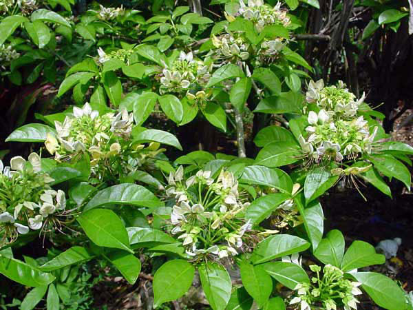

Basonym Of Drug
Varuna
Main Synonym
- Varana
- Setu
- Tiktashaka
- Kumaraka
- Shakadruma
- Tamalaka
- Swetapushpa
Regional Name
- Bengali: Barun Gach, Varun Gach
- Gujarati: Varana, Kagadakeri
- Hindi: Baruna
- Marathi: Vayavarna
- Tamil: Maralingam
- Telugu: Magalingam
- English: Cuscus Grass
Botanical Name
Crataeva nurvala Buch
Family
Capparidaceae
Classification (Gana)
- Aacharya Charaka: Tikta Skandha
- Aacharya Sushruta: Varunadi, Vatasanshamana, Kaphasanshamana Gana
- Aacharya Vagbhata: Varunadi Gana
External Morphology
A small tree
Useful Parts
Important Phytoconstituent
- Lupeol
- Varunol
- Quercetin
- Beta-sitosterol
Rasa Panchak
- Rasa: Tikta, Kashaya
- Guna: Laghu, Ruksha
- Virya: Ushna
- Vipaka: Katu
Action
Vatahara
Therapeutic Indication
- Mutrakrichhahara (Treat Urinary Diseases)
- Deepana (Appetizer)
- Ashmarighna (Lithotriptic)
- Vidradhihara (Treat Abscess)
Therapeutic Uses
- Vyanga - Stem bark powder with goat milk is applied to the face in melasma.
- Ashmari - Decoction of stem bark and root bark is beneficial in renal calculi.
- Sthaulya - Leaves are used as food preparation in the diet of obesity.
Dose
Decoction: 50-100 ml, Powder: 3-5 gm
Formulations
- Varunadi Kwath
- Varunadi Taila
- Varunadi Ghrita
Adverse Effect
Not Known
Remedial Measure
Not required